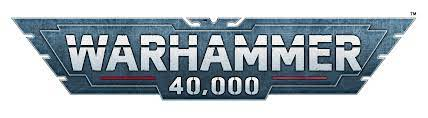
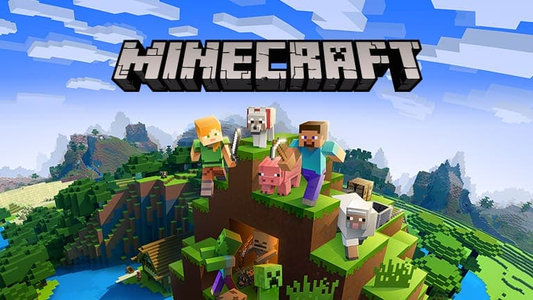
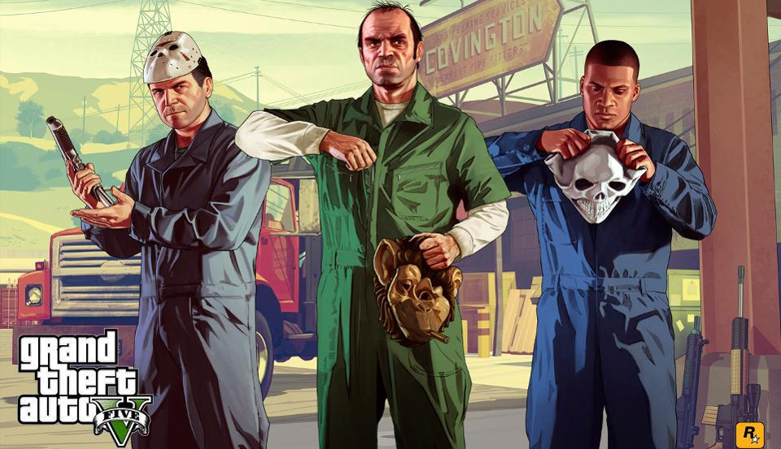

"It is the 41st Millennium. For more than a hundred centuries the Emperor of Mankind has sat immobile on the Golden Throne of Earth. He is the master of mankind by the will of the gods and master of a million worlds by the might of His inexhaustible armies. He is a rotting carcass writhing invisibly with power from the Dark Age of Technology. He is the Carrion Lord of the vast Imperium of Man for whom a thousand souls are sacrificed every day so that He may never truly die.
Yet even in His deathless state, the Emperor continues His eternal vigilance. Mighty battlefleets cross the daemon-infested miasma of the Warp, the only route between distant stars, their way lit by the Astronomican, the psychic manifestation of the Emperor's will. Vast armies give battle in His name on uncounted worlds. Greatest amongst His soldiers are the Adeptus Astartes, the Space Marines, bio-engineered super-warriors. Their comrades in arms are legion: the Imperial Guard and countless planetary defence forces, the ever-vigilant Inquisition and the Tech-priests of the Adeptus Mechanicus to name only a few. But for all their multitudes, they are barely enough to hold off the ever-present threat to humanity from aliens, heretics, mutants -- and far, far worse.
To be a man in such times is to be one amongst untold billions. It is to live in the cruelest and most bloody regime imaginable. These are the tales of those times. Forget the power of technology and science, for so much has been forgotten, never to be relearned. Forget the promise of progress and understanding, for in the grim dark future there is only war. There is no peace amongst the stars, only an eternity of carnage and slaughter, and the laughter of thirsting gods."
Mijn intersses
Muziek

Muziek
Muziek is een belangerijk onderddeel van mijn leven en hoe ik echt met mensen kan verbinden. Ik ben van plan om een extra pagina toe te voegen aan deze website puur voor de muziek en artiesten waar ik naar luister.
Waarom Muziek?
Muziek was niet iets waar ik actief naar luisterde, af en toe hoorde ik muziek op de radio, of wanneer iemand anders iets opzette luisterde ik mee. Zelfstandig deed ik niets met muziek, mijn interesse lag er niet, niks wat ik hoorde sprak me genoeg aan om echt actief te gaan luisteren. Dit veranderde aan het begin van de lockdown, met verschrikkelijk veel tijd aan mijn handen en een aanbd=od van vrienden om met zijn alleen een spotify familie account te namen en voor maar 2.50 per maand Spotify Premium te kopen ging ik kijken of dit voor mij was. Na een week allerlei verschillende artiesten en genres die mijn familie en vrienden aanraden te luister was het nogsteeds niks voor mij, tot Kanye West in mijn aangeraden artiesten verscheen. Natuurlijk wist ik wie hij was en dat hij populaire en bekende nummers had uitgebracht, maar of ik een nummer naast 'Gold Digger' kon opnoemen? Zeker niet, maar ik ging naar zijn muziek luisteren. Ik begon met zijn, door Spotify aangemaakte, essentiele playlist. En na niet eens een uur wist ik dat dit mijn soort muziek was. Ik ging verder kijken naar artiesten die veel overeenkwamen of artiesten waarmee Kanye samen had gewerkt en op dat moment besloot ik om mee te doen aan het Spotify premium familie account. Dit was misschien wel een van de beste besluiten die ik ooit heb genomen. Ik ben sinds die bijna altijd als ik alleen ben naar muziek aan het luisteren. Onderweg naar school, opruimen, op werk, schoolwerk, gamen, met vrienden of alleen bijna altijd staat mijn muziek aan.
Warhammer 40.000
Warhammer 40.000
Warhammer 40.000, ook bekend als Warhammer 40k, is een tabletop wargame die uitkwam in 1987. Deze Futuristic Sci-Fi setting is een spin off van de in 1983 Warhammer Fantasy.
Waarom Warhammer 40k?
Ik stuite op Warhammer 40k toen ik op een dag een YouTube video aanklikte die mijn interesse pakte.
Na het kijken van de video was ik eerst niet super overtuigd van Warhammer, het legde uit wat Warhammer precies is en wat de verhalen over gaan.
De beschrijving staat hier links onder de foto.
Dit pakte mijn interesse genoeg dat ik meer videos ging kijken en na een paar dagen was ik een super fan, maar uit het niks kwamen geen een van deze videos meer als recommendaties op mijn YouTube account, en ik was de naam van Warhmmer 40k vergeten.
Gelukkig na een maand of 3 zag ik weer een video en herkende ik het meteen. Ik keek de video en was direct weer geinvesteerd, ik schreef de naam op een papiertje naast mijn computer en ben sinds dien nooit gestopt met de lore achter deze setting volgen.
Sinds kort ben ik zelfs mijn eigen 'Necron' army begonnen die ik langzamerhand in elkaar zet, verf en uitbreid.
Games
Minecraft
Minecraft
Minecraft is een game die uitkwam in alpha in 2009 en officieel uitkwam in 2011. Het is ontworpen door Mojang Studio, later verkocht aan Microsoft. De game is een blok based sandbox game.
Waarom Minecraft?
Minecraft niet de eerste game die ik me kan herinneren, maar zeker wel de game die ik het meeste speelde. Vanaf het moment dat ik Minecraft ontdekte was ik hooked, bijna elk moment dat ik niks moest doen speelde in Minecraft. Ik speelde het met al mijn vrienden en familie, en de meeste fijne herinneringen uit mijn jeugd zijn gebonden aan dit spel.
Mario Kart WII

Mario Kart Wii
Mario Kart Wii is de zesde game in de series gemaakt door Nintendo, het spel kwam uit op 10 April 2008.
Waarom Mario Kart WII?
Mario Kart WII is niet de eerste en ook niet de beste game in de series, maar het is de eerste game die ik me kan herinneren. Het was de game die ik samen met mijn vader speelde en heeft veel fijne herinneringen die ik met hem heb gemaakt. Vandaag de dag speel ik nogsteeds games uit deze serie, en heb veel tijd in Mario Kart DS, Mario Kart WII, Mario Kart 7 en Mario Kart 8 Deluxe gestopt
Overwatch

Overwatch
Overwatch is een Hero Based Team First Person Shooter gemaakt door Blizzard Entertainment, het spel kwam uit op 24 Mei 2016 uit voor Playstation, Xbox en PC.
Waarom Overwatch?
Overwatch kwam uit net voor mijn verjaardag, maar ik volgde de beta al maanden eerder. Ik was zo enthosiast voor de game dat mijn moeder het speel had gekocht voor mijn playstaion als verjaardags cadeau, maar ze gaf het op de dag dat het uitkwam omdat ik er zoveel over sprak. Dit spel is de reden dat ik een PC heb gekocht, mijn vrienden op de middelbare school speelde dit ook maar dan op de PC, en als ik toen geen PC had gekocht was ik waarschijnlijk niet naar deze opleiding gegaan. Dit spel zorgde ervoor dat mijn interesse in alles computer gerelateerd weer opkwam, en sinds dien ben ik nooit terug gegaan naar console.
Grand Theft Auto V
Grand Theft Auto V
Grand Theft Auto V, ook bekend als GTA 5, is een action-adventure game gemaakt door Rockstar Games, het spel kwam uit op 17 September 2013.
Waarom GTA5?
Ik was nooit een fan van de GTA serie, het was een ongelofelijk bekend spel en bijna iedereen had er wel van gehoord. Ik nam er pas een interesse in Mei 2020 toen het gratis uitkwam op Epic Games voor een tijdelijke deal, aangezien het het begin van de lockdown was en al mijn vrienden de hele dag thuis zaten besloten we het te gaan spelen. Sinds die dag heb ik bijna 900 uur in het spel gestopt, en dit spel en al mijn vrienden waarmee ik het speelde zijn de reden dat ik niet gestoord werd tijdens de lockdowns. Hedendaags speel ik het spel bijna niet meer, maar het zal altijd een plekje in mijn hart hebben voor de geweldige tijden die ik heb gehad tijdens het spelen.